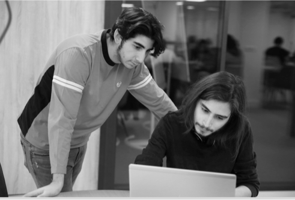

La Plateforme/Start
En 1 an, devenez un professionnel du numérique !
DÉVELOPPEMENT // RÉSEAUX // SYSTÈME // HARDWARE
Durée
12 mois dont 6 mois alternance
Lieu
Marseille
Modalité
40% école 60% entreprise
Budget
Gratuit pour les apprenants
Certification
RNCP Niv BAC à Bac+2
12 mois pour devenir un professionnel du numérique
A qui s’adresse la formation ?
La formation est ouverte à tous. Elle s’adresse particulièrement aux personnes souhaitant accéder à des postes dans le domaine du numérique et ne pouvant pas se permettre de suivre un « long » cursus de formation (3-5 ans). (personnes souhaitant accéder rapidement à l’emploi, +25ans, éloignés de l’emploi, inscrits au pôle emploi).
La formation dure 12 mois, elle est totalement prise en charge financièrement. Vous serez rémunéré durant les 6 mois d’alternance.
Descriptif de la formation
La formation commence par un « starter» de 3 mois (septembre – novembre) durant lequel
4 thèmes sont abordés:- Hardware : Quels sont les composants d’un ordinateur ? Comment fonctionnent-ils ? Quels sont leurs relations ?
- Système : Installation de machines virtuelles, systèmes d’exploitations, linux, lignes de commandes, installation de services
- Réseau : Fonctionnement des réseaux, communication entre périphériques, adressage IP
- Programmation : Logique du code, algorithmie
- Développement Web
- Réseaux et téléphonie IP
- Maintenance et dépannage Informatique